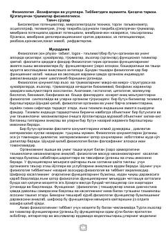

FFiziologiya fanining asoslari, vazifalari va uning tibbiyotdagi muhim ahamiyati haqida o'quv qo'llanma.
Ushbu kitob fiziologiya fanining asosiy tushunchalari, vazifalari va tibbiyotdagi ahamiyatini yoritib beradi. Unda tirik organizm funksiyalari, ularning boshqarilishi hamda fiziologik qonuniyatlarning klinik diagnostika va davolashdagi o'rni ilmiy nuqtai nazardan tushuntiriladi.